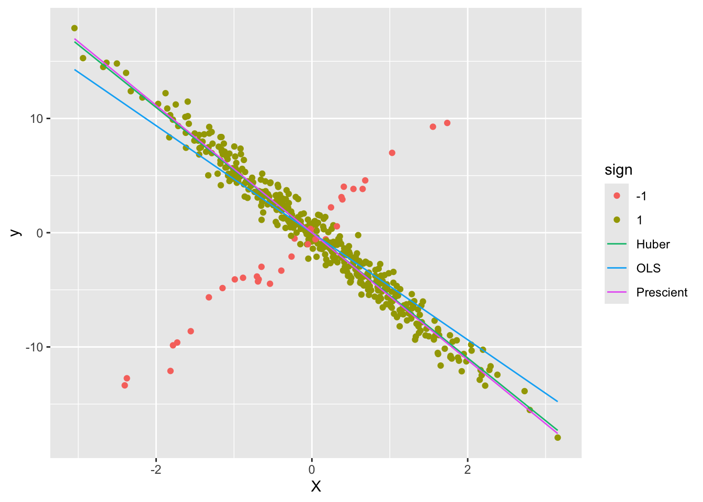

Huber Regression
Introduction
Huber regression (Huber 1964) is a regression technique that is robust to outliers. The idea is to use a different loss function rather than the traditional least-squares; we solve
\begin{array}{ll} & _{i=1}^m (y_i - x_i^T) \end{array}
for variable \(\beta \in {\mathbf R}^n\), where the loss \(\phi\) is the Huber function with threshold \(M > 0\), \[ \phi(u) = \begin{cases} u^2 & \mbox{if } |u| \leq M \\ 2Mu - M^2 & \mbox{if } |u| > M. \end{cases} \]
This function is identical to the least squares penalty for small residuals, but on large residuals, its penalty is lower and increases linearly rather than quadratically. It is thus more forgiving of outliers.
Example
We generate some problem data.
n <- 1
m <- 450
M <- 1 ## Huber threshold
p <- 0.1 ## Fraction of responses with sign flipped
## Generate problem data
set.seed(1289)
beta_true <- 5 * matrix(stats::rnorm(n), nrow = n)
X <- matrix(stats::rnorm(m * n), nrow = m, ncol = n)
y_true <- X %*% beta_true
eps <- matrix(stats::rnorm(m), nrow = m)We will randomly flip the sign of some responses to illustrate the robustness.
factor <- 2*stats::rbinom(m, size = 1, prob = 1-p) - 1
y <- factor * y_true + epsWe can solve this problem both using ordinary least squares and huber regression to compare.
beta <- Variable(n)
rel_err <- norm(beta - beta_true, "F") / norm(beta_true, "F")
## OLS
obj <- sum((y - X %*% beta)^2)
prob <- Problem(Minimize(obj))
result <- solve(prob)
beta_ols <- result$getValue(beta)
err_ols <- result$getValue(rel_err)
## Solve Huber regression problem
obj <- sum(CVXR::huber(y - X %*% beta, M))
prob <- Problem(Minimize(obj))
result <- solve(prob)
beta_hub <- result$getValue(beta)
err_hub <- result$getValue(rel_err)Finally, we also solve the OLS problem assuming we know the flipped signs.
## Solve ordinary least squares assuming sign flips known
obj <- sum((y - factor*(X %*% beta))^2)
prob <- Problem(Minimize(obj))
result <- solve(prob)
beta_prs <- result$getValue(beta)
err_prs <- result$getValue(rel_err)We can now plot the fit against the measured responses.
d1 <- data.frame(X = X, y = y, sign = as.factor(factor))
d2 <- data.frame(X = rbind(X, X, X),
yHat = rbind(X %*% beta_ols,
X %*% beta_hub,
X %*% beta_prs),
Estimate = c(rep("OLS", m),
rep("Huber", m),
rep("Prescient", m)))
ggplot() +
geom_point(data = d1, mapping = aes(x = X, y = y, color = sign)) +
geom_line(data = d2, mapping = aes(x = X, y = yHat, color = Estimate))
As can be seen, the Huber line is closer to the prescient line.
Session Info
sessionInfo()## R version 3.6.1 (2019-07-05)
## Platform: x86_64-apple-darwin19.0.0 (64-bit)
## Running under: macOS Catalina 10.15.1
##
## Matrix products: default
## BLAS/LAPACK: /usr/local/Cellar/openblas/0.3.7/lib/libopenblasp-r0.3.7.dylib
##
## locale:
## [1] en_US.UTF-8/en_US.UTF-8/en_US.UTF-8/C/en_US.UTF-8/en_US.UTF-8
##
## attached base packages:
## [1] stats graphics grDevices datasets utils methods base
##
## other attached packages:
## [1] ggplot2_3.2.1 CVXR_0.99-7 here_0.1
##
## loaded via a namespace (and not attached):
## [1] gmp_0.5-13.5 Rcpp_1.0.3 pillar_1.4.2 compiler_3.6.1
## [5] R.methodsS3_1.7.1 R.utils_2.9.0 tools_3.6.1 digest_0.6.23
## [9] bit_1.1-14 evaluate_0.14 lifecycle_0.1.0 tibble_2.1.3
## [13] gtable_0.3.0 lattice_0.20-38 pkgconfig_2.0.3 rlang_0.4.2
## [17] Matrix_1.2-17 yaml_2.2.0 blogdown_0.17 xfun_0.11
## [21] withr_2.1.2 dplyr_0.8.3 Rmpfr_0.7-2 ECOSolveR_0.5.3
## [25] stringr_1.4.0 knitr_1.26 tidyselect_0.2.5 rprojroot_1.3-2
## [29] bit64_0.9-7 grid_3.6.1 glue_1.3.1 R6_2.4.1
## [33] rmarkdown_1.17 bookdown_0.16 farver_2.0.1 purrr_0.3.3
## [37] magrittr_1.5 backports_1.1.5 scales_1.1.0 htmltools_0.4.0
## [41] scs_1.3-2 assertthat_0.2.1 colorspace_1.4-1 labeling_0.3
## [45] stringi_1.4.3 lazyeval_0.2.2 munsell_0.5.0 crayon_1.3.4
## [49] R.oo_1.23.0Source
References
Huber, P. J. 1964. “Robust Estimation of a Location Parameter.” Annals of Mathematical Statistics 35 (1): 73–101.